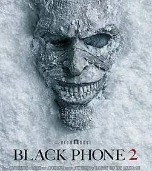
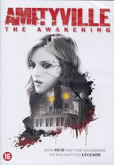
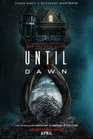
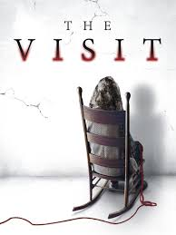
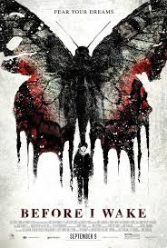
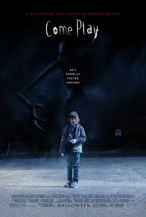
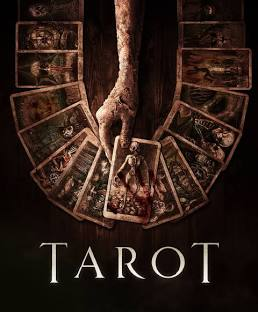
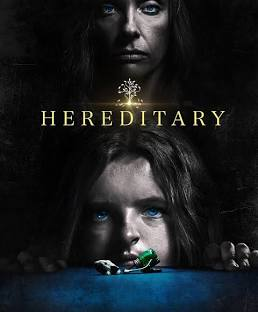

The Black Phone is about a shy 13-year old boy named Finney that is kidnapped by a masked man called The Grabber. He's locked in a basement with a disconnected black phone that mysteriously startes ringing. Each call is from one of the Grabber's previous victims, and they give Finney advice and clues to help him escape. Meanwhile, Finney's sister Gwen has strange dreams that help police search for him. The story follows Finney using courage, the phone's messages, and his own instincts to outsmart the kidnapper and get free.
The sequel continues after Finney's escape. He's trying to move on with his life, but the past keeps affecting him. When strange events start happening again, Finney and Gwen realize that the supernatural black phone still has unfinished business. New calls, new warnings, and a new mystery pull them back into danger as they try to stop someone connected to the original kidnapper. The story focuses on healing, fear, and facing what still haunts them.
Amityville: The Awakening is about a teenage girl named Belle that moves into a creepy house with her mom and siblings, including her sick brother, James. James is bedridden and connected to the house in mysterious ways, the evil haunting seems to target him the most, and strange, terrifying events often happen around him. Belle has to uncover the house's dark secrets and protect her brother while trying to survive the supernatural dangers.
A woman named Seo-yeon who finds an old cordless phone in her childhood home and unexpectedly connects with another woman, Young-sook, who is living in the same house but 20 years in the past. At first, the two become friends and help each other by changing events through time, but things turn dark when Young-sook's life takes a violent path. Every time she alters the past, Seo-yeon's present changes in scary and dangerous ways. The movie becomes a tense battle across time with Seo-young trying to survive as young-sook uses the past to control and threaten her future.

Until dawn is about a girl named clover and her friends go to investigate where her sister vanished, they end up in a remote, creepy valley. Suddenly they get trapped in a time loop: each night, a killer stalks them and they die, but the next night resets with new horrors. They don't remember past loops, so everytime feels fresh and they must survive until sunrise or keep repeating the nightmare. It's full of horror, mystery, and scary surprises.
The visit is about two siblings who go to stay with their estranged grandparents for a week, hoping to reconnect with their mom's side of the family. At first everything seems normal, but the grandparents soon start acting strange, wandering around at night, doing unsettling things, and refusing to answer questions about their past. As the kids record the trip on camera, they discover clues that something is very wrong in the house. The visit turns into a fight for safety as they uncover the truth about who they're really staying with.
Before I wake is about a young boy named Cody whose dreams and nightmares come to life while he sleeps. When he has a happy dreams, beautiful things appear in the real world, but when he gets scared, a dark, mysterious creature connected to his past shows up and causes dangerous events. His new foster parents, who are grieving the loss of their own child, first see Cody's gift as a miracle but soon realize it's also a threat they don't understand. As they dig into Cody's past to uncover the truth behind his nightmares, they have to find a way to protect him while also helping him face the fear that has been haunting him his whole life.
Come Play is about a boy named Oliver, a lonely non-verbal boy who communicates through his tablet, which becomes the doorway for a creature named Larry to reach him. Larry appears through a digital storybook that shows up on Oliver's device, and each time someone reads it, Larry grows stronger and starts affecting the real world. As strange events escalate, lights flickering, objects moving, and Larry appearing outside of screens, Oliver's parents realize their son is being targeted by something supernatural that wants to take him away and make him its "friend". To save him, the family must finally come together, ending with a heartbreaking sacrifice to protect him from Larry once and for all.
Forgotten is about a college student named Jin-seok, who becomes obsessed with finding out what happened when his older brother Yoo-seok is suddenly kidnapped and then returns home acting completely different. Yoo-seok's strange behavior, like not recognizing things, sneaking around at night, and hiding secrets makes Jin-seok question everything he knows about his family. As Jin-seok investigates, he starts uncovering clues that don't add up and realizes that his own memories might not be real. The truth behind the kidnapping leads to a huge twist that forces Jin-seok to confront hidden lies, buried trauma,and a past he didn't know he had.

Tarot is about a group of friends who use a mysterious deck of tarot cards during a party, not realizing the deck is cursed. Each card they draw predicts a terrifying event connected to a supernatural force tied to the deck's past. As their fortunes start coming true, the friend's realize they're being hunted one by one by the creatures represented im the cards. They try to uncover the deck's origin and break the curse, but the more they investigate, the more they realize that fate might already be sealed.
Herediary is about the Graham family, Annie, her husband, and their two kids whose lives start to fall apart after Annie's secretive mother dies. Strange things begin happening around their home, and the family slowly realizes that the grandmother was involved in a dangerous cult that left behind a dark influence targeting the family. As eerie events escalate, Annie uncovers horrifying truths about her family's past, the cult's plans, and why her children seem to be at the center of everything. The movie becomes a story about grief, family trauma, and how the choices of previous generations can create consquences no one expected.
